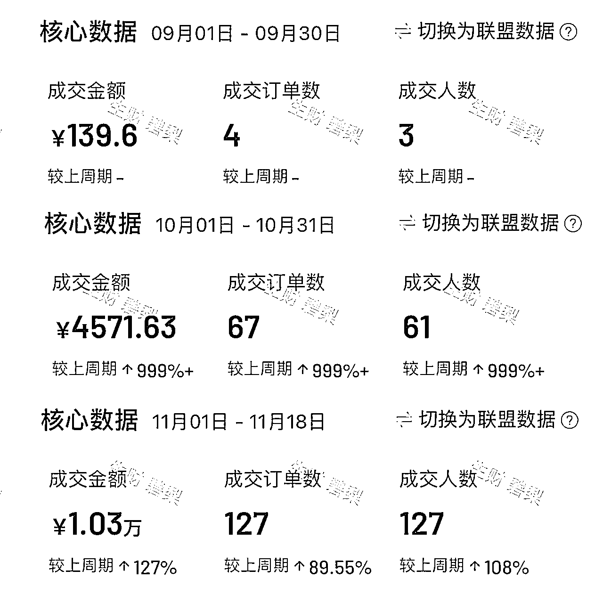
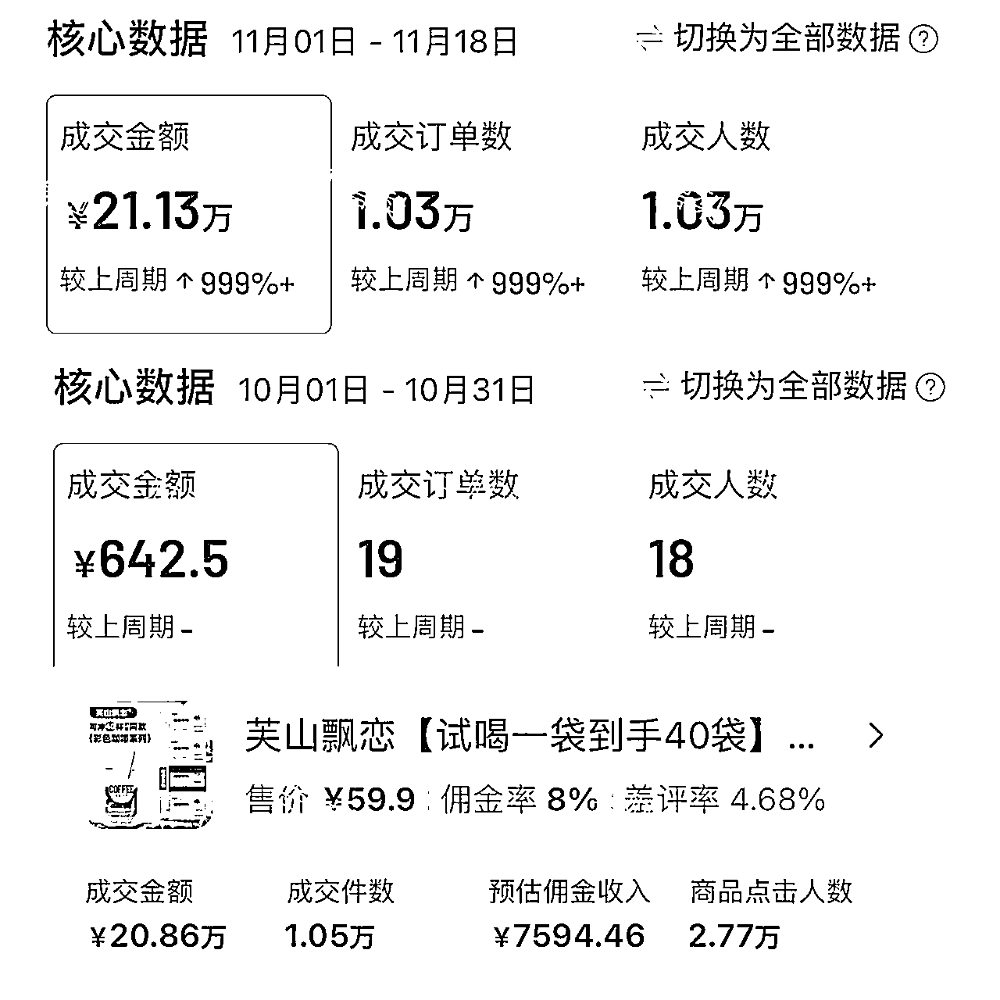
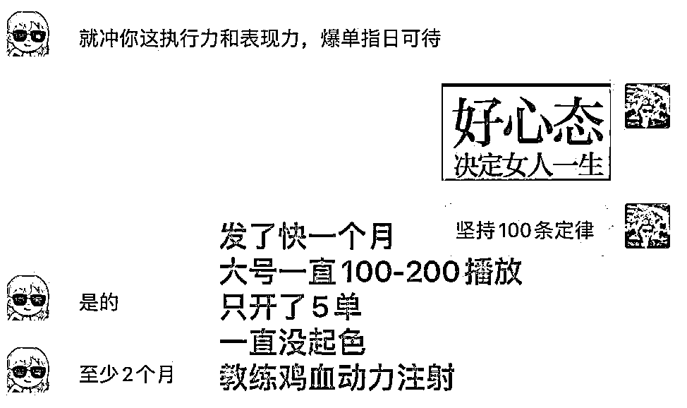
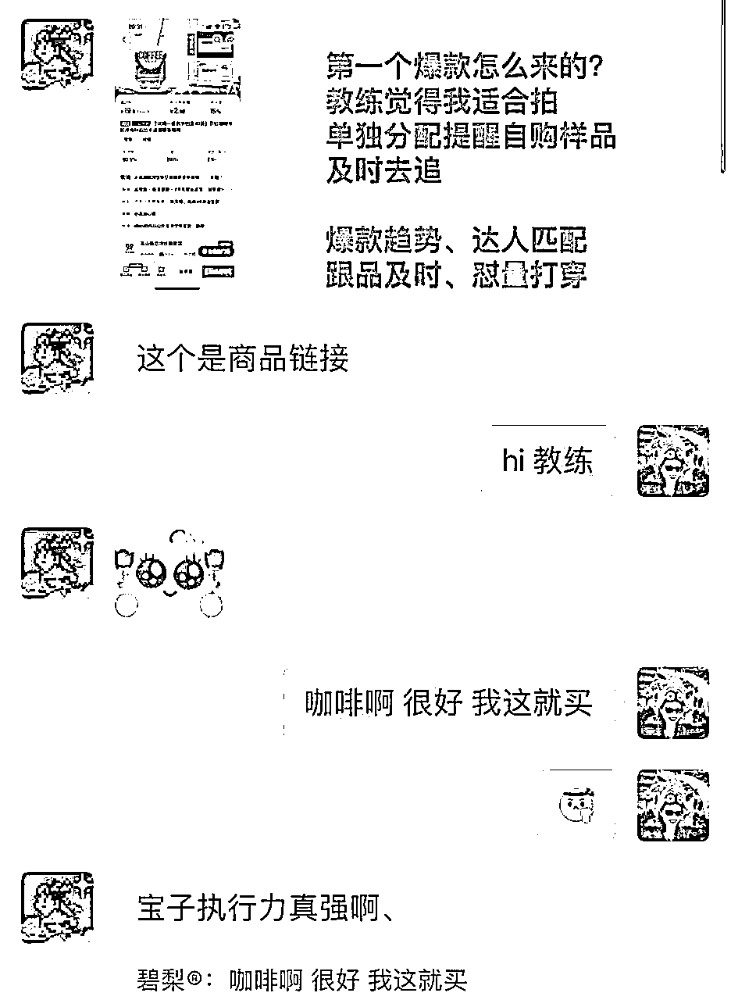
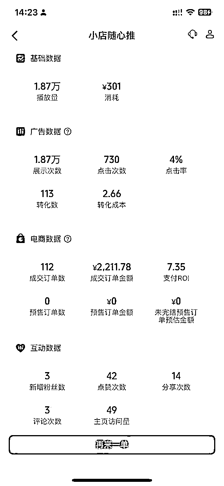
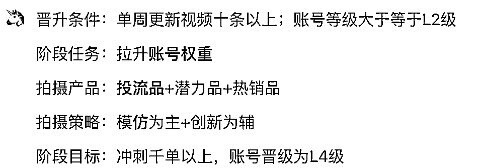
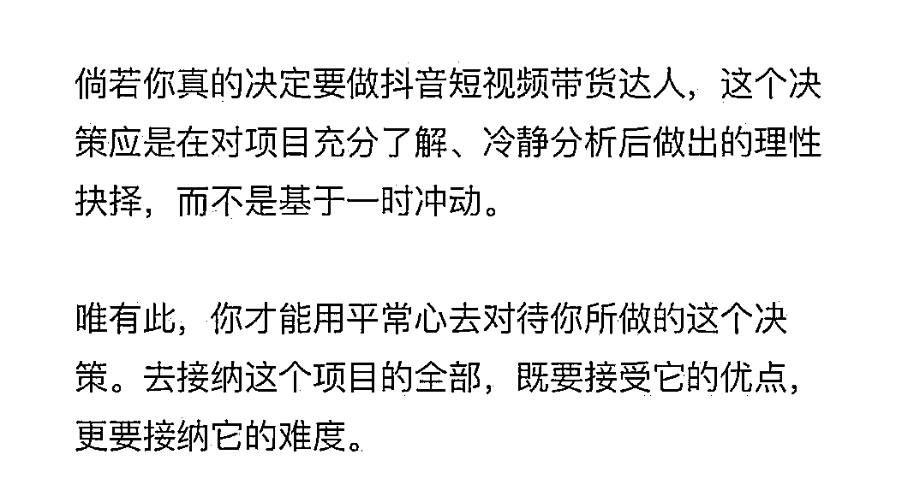
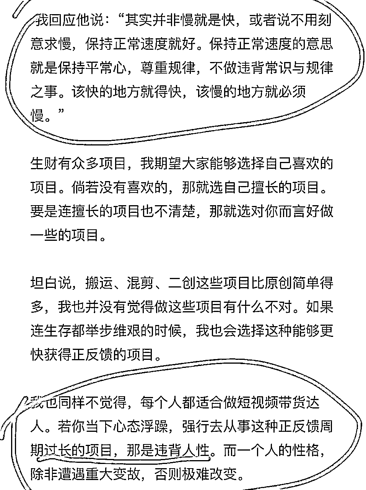

来源：https://wu5pmm9rej.feishu.cn/docx/YImJdLqhgoxs7oxg0npcGPuEnId
大家好，我是碧梨，今年4月底加入生财，途经3次航海，5月视频号百货打品，7月视频号读书带货、9月抖音精致达人，也算是老船员了。和大家汇报下参加航海的成绩：
5月航海：gmv 没过千
7月航海：gmv 6700
9月航海：gmv 20w+


从以上经历大家可以看出来，这次航海，我不是纯新手小白。并且此次航海，我是全职参加。每天跟上班一样，从睁眼开始到晚上11点半，不得不停下，干不完根本干不完。
首先经历2次的视频号航海，我通过3个多月的时间培养了自己的 出镜+剪辑+采编能力。我也是从不敢出镜，怕熟人刷到自己的带货视频，一点点锻炼到即便旁边站着人，也能眉飞色舞口播的程度。
赚钱这事没啥不好意思，围观的人不重要，从你视频下单的人才重要！
（提示：本篇大部分为个人航海的感受经验，实操相关的并不多。盗坤团队的精致达人孵化手册已经写的非常全面了，教练也事无巨细，熬夜点灯为你领航）
接下来，和大家分享下「9月精致达人」航海的节点
10号开船，我慢了很多天才跨出第一步，一直处于观望和对于拍摄工作量的畏难😅还有P人固有的拖延
以前的航海经历让我能更快的速度进入冲刺组，真的是没有白走的路，每一步都算数。
虽然播放只有100，但是出单了还是很开心的，这份开心以后可能很难再体会到了
大号是做读书博主，发社科流量视频涨粉到3000+的老账号，男粉为主。经历了快1个月的大号带货视频播放量低迷，且每条视频推的人群画像都是主男性，不出单，我人都麻了。
教练建议开小号，两个号一起发。这个决定没错，干干净净的纯新小号，没想到它正反馈来的又快又爽。

大号好像是抖M体质，当我要重点更新小号的时候，它的画像开始跑正了，30+女性为主。
并且我跟上了教练提到的热度品-好运香水，不满足寄样要求，我就自己买，跟品速度要快，趁热度迎来了第一个小爆，自然流高佣金。
文案库的含金量，懂得都懂
养成习惯，文案库每天都刷一遍：有新品，有重要且紧急的新品，有还没来及出文案的重要且紧急的新品，大家要格外注意⚠️，你动作快，你也许就是下一个爆款
没错，这又是我动作快，自己买样紧追的，且只有我一个人追了😂（后续看到教练发言才知道）
一定要听话！教练群发、私发的重要提示，你要高亮注意⚠️要放在你的心趴上！这就是你跟品拍品的重点工作！
要马上转存到你的备忘录里！每天群信息很多，很容易被忘却！

教练信息的含金量，我劝你不懂赶紧懂
同时，作为新的账号，抖音赠送随心推300优惠券，提示我再不用就过期了，好，那就用！
自此我感受到了投流的力量。（花1元，抖音附赠300元的付费流量，所以消耗是301）
投产roi 7.35 非常快乐，毛遂自荐发给教练，申请品牌方投流，开启全域推广，连爆4条，拉满20w+ gmv。
（ps：并不是鼓励大家去给自己视频投流！能白嫖就白嫖，普通人这么投，很难扛得住，没必要自己花钱梭哈！大把的商家投流品，去拍！）

所以这次的爆款是投流品而非自然流，这也是为什么小号在发了十几条视频后，快速起号的原因，但投流品的作用对于我的小号来说已经发挥了100%，从lv0直接冲到lv4，人群、带货权重对于新号来说，真的是双丰收了。
如果你对于目前带货阶段时不时陷入迷茫，那就反复看《精致达人孵化流程》——【孵化阶段】部分都已经给你写好了答案，照做就是。
而我在冲刺组阶段，我的所有动作都围绕⬇️

看到盗坤在生财发布的中期航海文章后，想一想应该给自己也做一个复盘，2个月了，不，其实从进入生财开始，我就在尝试各种项目，我给自己打鸡血，给自己充沛的能量，拉满执行力，去试错。
从心气极高到生死难料，再下桌换场；从轻易就被镰刀收割到开始对每一次的付费行为进行“为什么”评估（感谢明白老师的“凡事多问为什么”精华帖）；从一个赛道换到另一个赛道。我想这个过程，是每一位进入生财的圈友都有过的心路历程。
但回头看看，就我个人而言，如文章开头所说：没有白走的路，每一步都算数。
拉长时间线，这些让人毫无觉察的积累和变化，正在潜移默化的为你的扬帆做蓄力。
抖音精致达人，至少2个月，这是在对短视频带货，自媒体，拍摄剪辑都有相当多的经验和技能储备的前提下，你能看到的最快成材周期。那么对于更小白的船友，作为同期战友，我也真心建议：踏实的做好每一项，围绕你现在所处阶段的正当时的任务事项，执行力拉满，磨练心力。你要知道，这是一场持久战。
即便是我爆过了，也仅仅只是起号了而已，这只是刚开始。
我也还有很多问题：拍摄剪辑效率低，更新频率差，量堆不上平均水平等等。怎么一爆再爆？怎么让视频质量更好？怎么保证月度gmv目标？怎么提高自然流产出效率？怎么提高自己的佣金收入水平？
我想这都还需要一段长时间，去学习，去调整，去优化的事。人家lv5的带货大博主，几百条甚至上千条的视频在主页放着，就是让你我认清，哪有什么一蹴而就，短期正反馈拉爆的事情，马上就要2025年了，清醒一点。
盗坤：“保持平常心，尊重规律，不做违背常识和规律的事。尊重经营，尊重时间”

